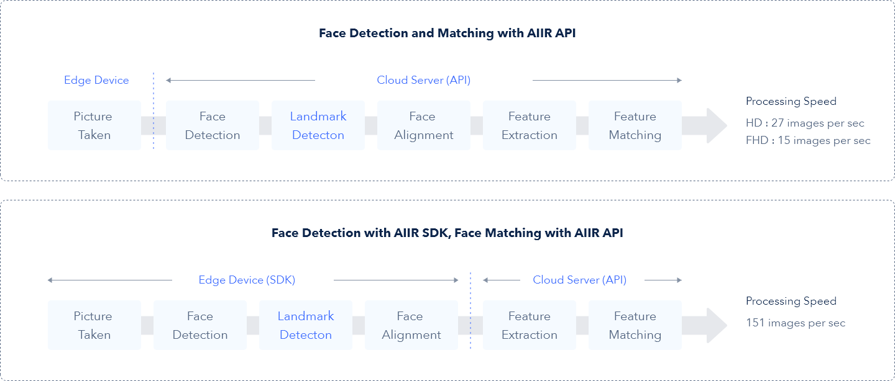
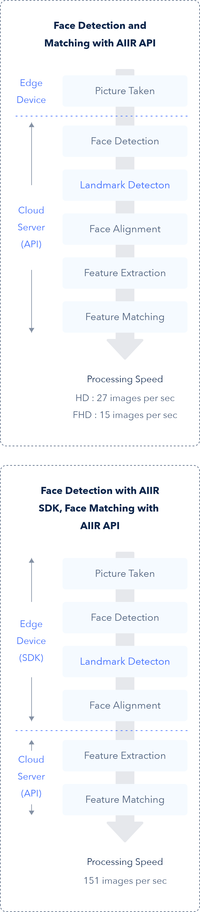

- AIIR API란?
- 패키지 설명
얼굴과 관련된 기능 개발을 위한 얼굴인식 API
AIIR API(에어 API)는 얼굴인식을 위한 완전한 인터페이스입니다. 알체라에서 제공하는 간단한 코드 몇 줄이면 A-Z로 완벽하게 작동하는 얼굴인식 기능을 사용하실 수 있습니다. 이미지 속 얼굴의 주인을 찾거나 얼굴 위변조 여부를 검사하고, 마스크 착용 여부와 표정, 연령, 성별 등을 알아낼 수 있습니다. 별도 개발 없이 AIIR API로 첨단 얼굴인식 기능을 추가하세요.
첨단의 얼굴인식을 최소한의 공수로 활용하세요
-
01

정확한 얼굴인식
알체라는 글로벌 얼굴인식 테스트 NIST FRVT 최상위권 랭커로써,마스크를 착용한 상태에서도 99.99%의 정확도를 자랑합니다.
-
02

빠른 얼굴인식
사용자가 얼굴인식을 위해 기다릴 필요가 없습니다. 1:1 매칭은 50만분의 1초, 200만명 기준 1:N 매칭은 1초 이내에 완료됩니다.
-
03

강력한 보안
첨단의 얼굴인식으로 이용자의 신원을 보장하는 안전한 서비스를 만들 수 있습니다. AIIR SDK의 AI엔진은 AIIR ID나 AIIR Pass 등 알체라의 다른 솔루션들에도 활용되고 있습니다.
-
04
유연한 개발과 운영
AIIR SDK는 확장성 높은 멀티플랫폼 개발 키트입니다. 기기당 한 번의 결제로 기간 제한 없이 사용이 가능하고 등록인원의 제한도 없습니다.
HOW IT WORKS
고객님만의 패키지를 구성할 수 있습니다
이용하려는 기기의 성능과 요구되는 속도, 개발 역량 등에 따라 AIIR API로 수행할 기능의 범위를 직접 정하실 수 있습니다.
AIIR API로 Face Detection과 Face Matching 수행 : 개발을 최소화하고 싶으시다면, AIIR API를 통해 얼굴인식의 전 과정을 알체라 클라우드 서버에서 수행하실 수 있습니다. 이 경우, 이용하시는 Edge 기기는 클라우드 서버로 이미지를 전송하기만 하면 됩니다. AIIR SDK로 Face Detection, AIIR API로 Face Matching 수행 : 개발 역량이 있고 더 높은 성능의 얼굴인식을 원하신다면 얼굴 검출부터 얼굴 정렬까지는 AIIR SDK를 통해 직접 개발하고, 특징 추출과 특징 매칭은 AIIR API로 클라우드 서버에서 수행하실 수 있습니다. 어떤 방법이 더 적합할지 고민되신다면 알체라 영업팀에 문의 주시기 바랍니다.
 
알체라의 AI 얼굴인식 기술을 직접 체험해보세요
AIIR SDK 데모를 무료로 이용해보실 수 있습니다. 지금 신청하세요!